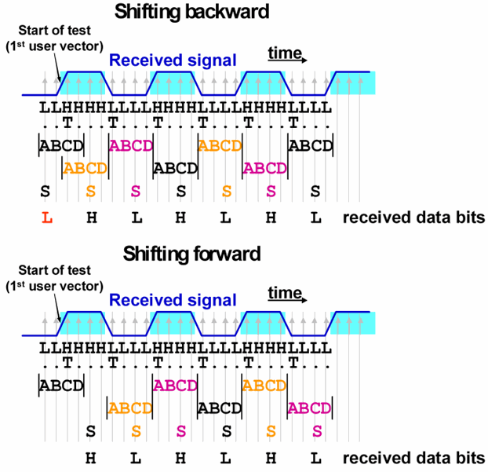

Positioning the first observation window and jump by 2
In many cases, the transition tracker issues the error ErrJMP2 when it detects a BC transition. However, it does not do this when it finds only one such transition, and this is the very first transition at test start or after a IO pin has switched from drive to receive mode.
The reason for this is that the first observation window may start before the first user vector, and that in this case the BC transition may be caused by the (number of) samples that were taken before the first user vector. Actually, this is exactly what will happen with the default position of the first observation window.
In this position, the C sample of the first window is the first sample that is taken after test start. Samples A and B reflect the state of the device before the test. Now if sample A and B have the same value, there will be either a BC transition in the first window or no transition at all. In the latter case, however, the first transition will also be a BC transition if all bits up to this transition are sampled exactly 4 times.
BC transitions create an indeterminacy in that the selected sample can either be (a) the A sample of the current observation window, or (b) the first sample after the current window (see Drift and transition tracking). In case (b) no sample will be selected from the current window. Accordingly, the number of bits that are passed on to the pattern matching block will be one less in case (b) as compared to case (a).
However, the first bit of case (a) can be skipped at test start. For it either reflects the state of the DUT before the test, or there is one bit too many with the same value before the first transition. Therefore, the first n bits (where n is the length of the synchronization pattern) of case (a) should not match the first n expected bits, and so the first bit will in fact be skipped (see Startup latency and initial synchronization).
Note, however, that for this to work reliably, the restrictions listed in Drift and transition tracking must be satisfied.
Example
In order to simplify the graphics, the following examples illustrate the operation mode by 1 UI observation windows. But note that in the actual implementation, the observation window actually consists of 3 UI (= 12 samples); see Drift and transition tracking.

This example shows the case where the first transition coincides with the start of the first user vector. The expected data starts with H L H L H L. Therefore if the tracker selects the A sample of the first window, the synchronization pattern cannot match at the first comparison, and so the L which is sampled when shifting backward cannot create any confusion.
Functional changes
- Introduced in SmarTest 7.0.1